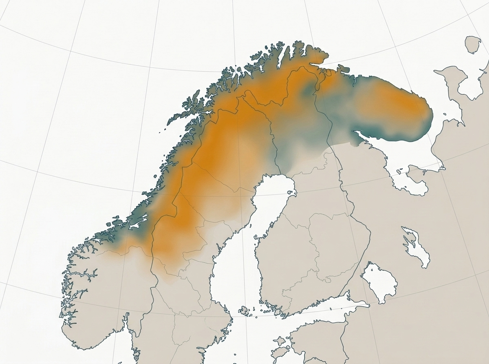
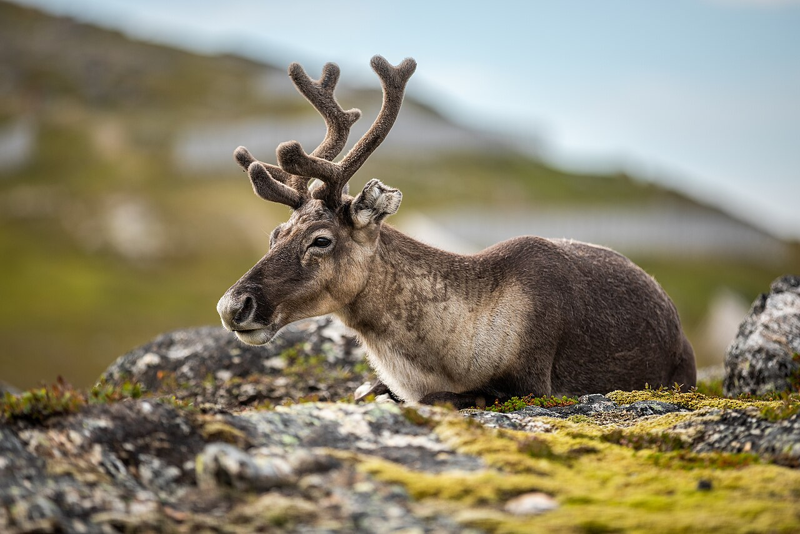
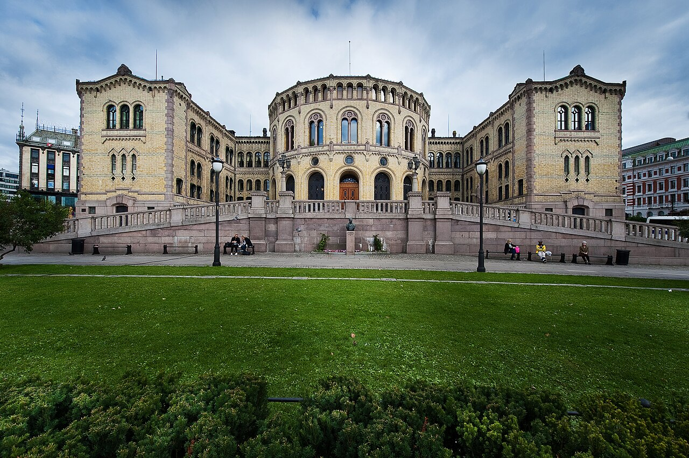
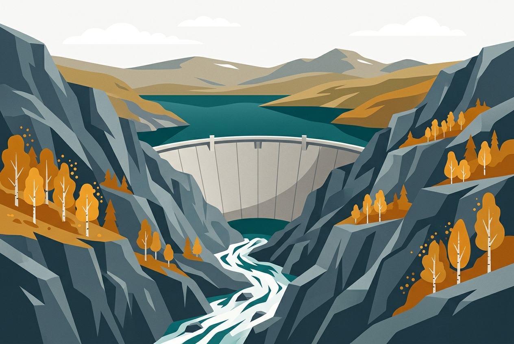
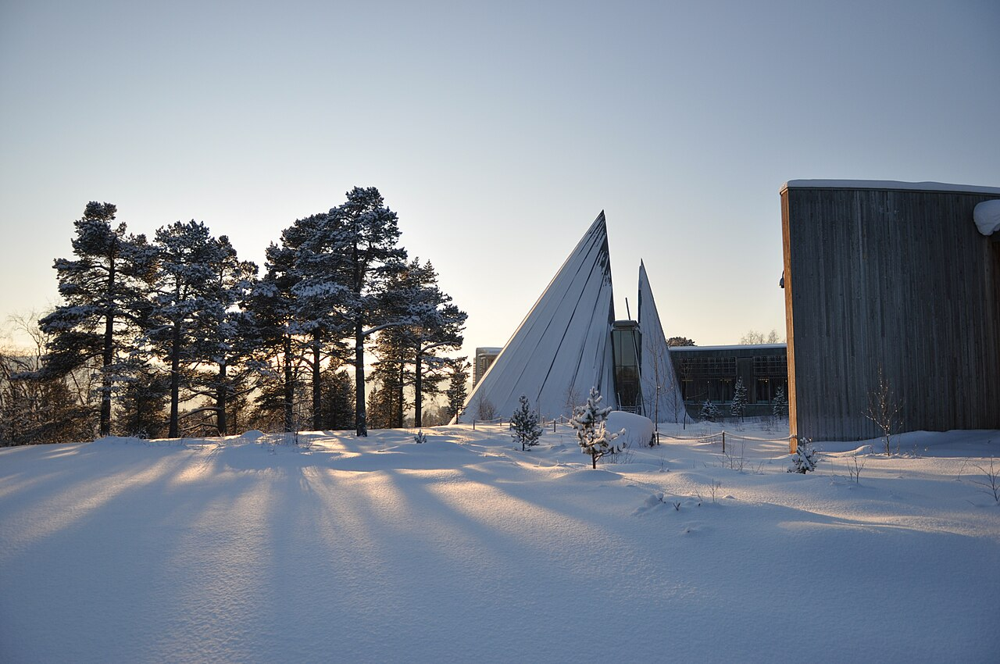
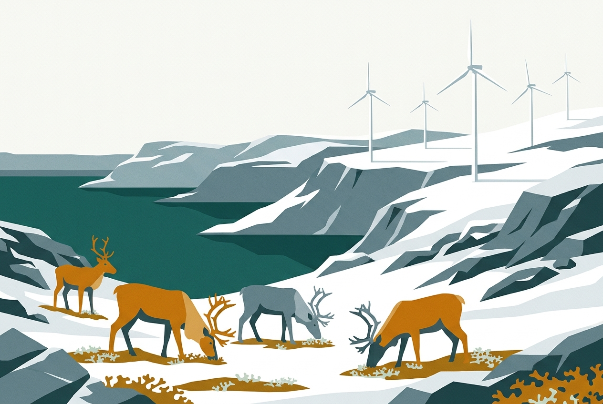
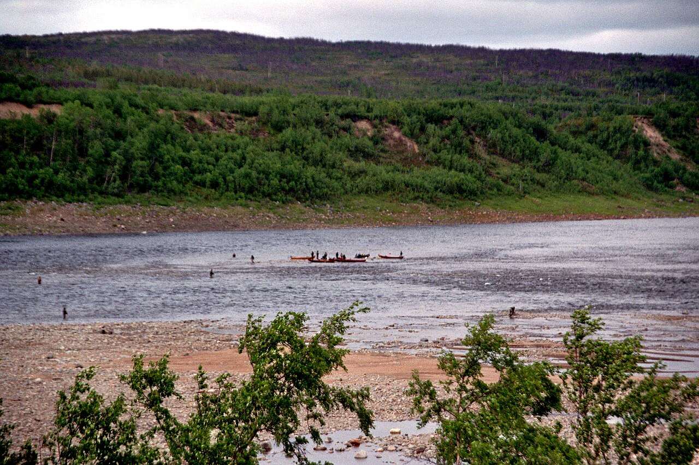

Samenes hjemland
Vi skal se nærmere på samisk kultur, historie og næringsgrunnlag – og på konfliktene knyttet til ressursbruk, energiutbygging og naturvern i samenes historiske bosettingsområde.
Samer har status som i Norge, og deres historiske bosettingsområder dekker hele Nord-Norge, Nord-Sverige, Nord-Finland samt Kola-halvøya i Russland, men også innlandet i Midt-Sverige og Midt-Norge ned til den nordlige delen av Østlandet. I dag bor det samer over hele landet.
Tradisjonelt har samene levd av jakt, fangst, fiske, håndverk og reindrift, og naturen har stått sentralt for mange samers næringsutøvelse, kultur og identitet. I politiske saker som handler om natur og naturvern, har mange samer og naturvernere tidvis sammenfallende interesser. Men det finnes også eksempler på konflikter der reindriftssamer og naturvernere ikke mener det samme, og samiske interesser og naturverninteresser kolliderer.
Du skal lære om
- • Samenes tradisjonelle bosettingsområder, språk og næringsgrunnlag
- • Kolonisering og i samenes hjemland
- • , Sametinget og
- • Samenes interesser i spørsmål om vindkraft, rovdyr og laksefiske
Tenk over
- Hva vet du om samisk næringsgrunnlag og kultur fra før?
- Hvorfor kan vindkraft og vannkraft skape konflikt med reindrift?
- Når kan samiske næringsinteresser og naturverninteresser komme på kollisjonskurs?
Samenes hjemland
Kort fortalt
Samenes hjemland er nord i Norge, Sverige, Finland og Russland, og tradisjonelt har samisk næringsgrunnlag bestått av fiske, jakt, fangst, sanking, håndverk og reindrift. I dag jobber de fleste samer i de samme yrkene som resten av Norges befolkning.

Det er godt mulig at samene i hvert fall delvis stammer fra de aller første menneskene som innvandret til Norden etter istiden for rundt 12 000 år siden, og at etniske norske er etterkommere av folk som innvandret noe senere. Når samene oppsto som folk, er en interessant historiefaglig diskusjon, men den har ingen juridisk betydning for samenes stilling som i Norden: Som forklart i kapittel 1 (Hvem er urfolk?), er det ikke et krav i folkeretten å ha vært aller først i forhistorisk tid, men å ha bodd i området før dagens stater og grenser ble etablert.
Samenes tradisjonelle hjemland dekker hele Nord-Norge, Nord-Sverige, Nord-Finland samt Kola-halvøya i Russland, i tillegg til innlandet i Midt-Sverige og Midt-Norge ned til det nordlige Østlandet. Ingen av de nordiske landene fører offisiell statistikk over etnisitet, men det anslås at det lever 50 000–80 000 samer totalt: rundt 40 000–60 000 i Norge, 15 000–36 000 i Sverige, 7 000–9 000 i Finland og 1 500–2 000 i Russland. I dag bor stadig flere samer i byer som Oslo, Tromsø og Alta. I middelalderen ble samene kalt finner – bakgrunnen for navnet Finnmark – selv om «finner» i dag brukes om personer fra Finland. Et annet gammeldags ord for same er lapp (jf. Lappland i Sverige og Finland). Å bruke begrepet «lapp» om samer i dag oppfattes som nedsettende og rasistisk.
Tradisjonelt næringsgrunnlag

Tradisjonelt har samisk næringsgrunnlag vært svært mangfoldig, og man skiller ofte mellom grupper som reindriftssamer, markasamer, sjøsamer, elvesamer, skogssamer og fastboende samer – selv om de regnes som ett felles urfolk. Sjøsamer langs kysten og fjordene i Nord-Norge ble særlig hardt rammet av språktap under fornorskingen. Håndverk (duodji), jakt, fiske og sanking har stått sentralt. Navnet Sápmi brukes både om det geografiske området og om den samiske nasjonen som helhet.
Moderne yrkesliv
Selv om reindrift står sentralt for mange samer og for samisk kultur, er det en myte at alle samer driver med reindrift. I dag har de fleste samer samme type arbeid som resten av befolkningen i Norge, og jobber for eksempel som leger, renholdere, sjåfører, journalister eller lærere.
⚡ Super-sammendrag · Samenes hjemland
Sápmi strekker seg over fire land med anslagsvis 50 000–80 000 samer (flest i Norge, og stadig flere i byer). Tradisjonelt har både reindrift, sjøsamer og skogssamer preget næringsgrunnlaget, mens de fleste samer i dag jobber i vanlige yrker.
Samiske språk
Kort fortalt
Det finnes flere samiske språk. Tre av dem blir snakket i Norge i dag: lulesamisk, nordsamisk og sørsamisk. Av de tre er det nordsamisk som blir snakket av flest mennesker.
Selv om samene oppfatter seg selv som ett felles folk, er samisk ikke bare ett språk, men en gruppe nært beslektede språk i den finsk-ugriske språkfamilien (i slekt med finsk, ikke norsk). De samiske språkene er likevel ikke så like at den som snakker ett samisk språk automatisk forstår alle de andre, slik nordmenn, svensker og dansker stort sett forstår hverandre.
Historisk har det eksistert elleve ulike samiske språk, og hele seks av dem snakkes eller har blitt snakket i Norge: nordsamisk, lulesamisk, sørsamisk, samt pitesamisk, umesamisk og skoltesamisk. Sørsamisk og lulesamisk snakkes bare av noen få hundre mennesker, mens flere tusen snakker nordsamisk. Det er likevel bare i de to kommunene Karasjok og Kautokeino på Finnmarksvidda, hvor reindrift er en hovednæring, at nordsamisk også er det dominerende språket i alle sammenhenger.
Sammenligning av de tre samiske språkene i Norge
Navnet på og vanlige ord varierer mellom språkene.
| Språk | Én fisk | Norge | Samenes hjemland |
|---|---|---|---|
| Lulesamisk | akta guolle | Vuodna | Sábme |
| Sørsamisk | akte guelie | Nöörje | Saepmie |
| Nordsamisk | okta guolli | Norga | Sápmi |
⚡ Super-sammendrag · Samiske språk
Samisk er en gruppe språk i den finsk-ugriske språkfamilien. I Norge snakkes nordsamisk (størst), lulesamisk og sørsamisk.
Koloniseringen av samenes hjemland
Kort fortalt
Samene har blitt utsatt for mye urett fra myndighetene. Den norske stat førte en hard , og ønsket at samene skulle gi avkall på sin kultur og sitt språk for å bli mest mulig lik majoritetsbefolkningen.
Koloniseringen av de samiske bosettingsområdene har tatt ulike former gjennom historien. Fram til faste statsgrenser ble trukket opp på 1700-tallet, fikk samene i stor grad opprettholde sin levemåte og styre seg selv, men ble hardt utnyttet økonomisk gjennom skattlegging. Fordi både Danmark-Norge, Sverige og Russland hadde gitt seg selv skattleggingsrett, kunne noen samer bli dobbelt eller trippelt skattlagt.
Den største trusselen mot livsgrunnlaget kom da det fra 1852 ikke lenger ble tillatt å krysse landegrensene med reinflokkene. I reindriften er det avgjørende å kunne veksle mellom vinterbeiter i innlandet nær skoggrensa og sommerbeiter ved kysten og fjordene. Grenseblokaden skapte derfor stor nød blant samer på alle sider av grensene.
Det var også tydelig forskjellsbehandling i landrettigheter. Mens bofaste etnisk norske bønder fikk anerkjent jorda som privat eiendom, ble samenes avtaler om delt bruksrett ikke anerkjent på samme måte. I 1902 vedtok Stortinget en jordlov for Finnmark som favoriserte norsktalende ved kjøp av statlig jord, og som slo fast at jordeiendommer skulle gis norske navn.
Fra midten av 1800-tallet førte myndighetene en bevisst politikk for å samene. Denne var spesielt hard og rasistisk tidlig på 1900-tallet, da norsk nasjonalisme sto sterkt rundt unionsoppløsningen med Sverige i 1905. Den innebar forbud mot samisk språk i alle offentlige sammenhenger – inkludert i friminuttene på skolen – og et mål om at samene skulle slutte med egne tradisjoner og slutte å se på seg selv som et eget folk. Kong Harald framførte en offisiell beklagelse for denne politikken i 1997. Sannhets- og forsoningskommisjonen (2023) understreket likevel at fornorskingen ikke er et avsluttet kapittel, fordi holdninger og samfunnsstrukturer fortsatt henger igjen.

I juni 2023 la Sannhets- og forsoningskommisjonen fram sin rapport for Stortinget, som dokumenterte de langvarige skadevirkningene av fornorskningspolitikken mot samer, kvener/norskfinner og skogfinner. Den 12. november 2024 behandlet Stortinget rapporten og ba formelt om unnskyldning for uretten staten begikk, samtidig som det ble vedtatt 17 tiltak for å styrke språk, kultur og kunnskap i skolen. Les mer i faktaboksen om Sannhets- og forsoningskommisjonen i kapittel 1 →
⚡ Super-sammendrag · Koloniseringen av Sápmi
Skattlegging, grensestenging (1852), Jordloven (1902) og språkforbud i skolen var del av fornorskningspolitikken. Staten har siden beklaget uretten – senest med Stortingets formelle unnskyldning i november 2024 etter Sannhets- og forsoningskommisjonens rapport.
Alta-aksjonen
Kort fortalt
Vannkraft er fornybar energi, men innebærer inngrep i naturen. Mange samer er avhengige av den samme naturen for å drive reindrift. Forslaget om å bygge ut et vannkraftverk i Finnmark på 70- og 80-tallet møtte enorme protester fra miljøvernere og samiske organisasjoner. Utbyggingen ble gjennomført, men motstanden blir ansett som et viktig symbol på ivaretakelsen av samiske interesser.

Skal verden unngå global oppvarming ut over to grader, må forbruket av fossil energi ned, samtidig som milliarder av mennesker trenger energi. Da må energiforbruket kuttes eller produksjonen av fornybar energi økes. Vannkraft og vindkraft er de fornybare energiformene der Norge har størst potensial – men begge innebærer naturinngrep. Fordi reindriften trenger store arealer i de minst bebodde delene av landet, har samiske interesser gjentatte ganger kollidert med kraftutbygging.
Striden om utbyggingen av på slutten av 1970-tallet og begynnelsen av 1980-tallet () var blant de hardeste politiske kampene i Norge etter andre verdenskrig. Utbyggingen, som sto ferdig i 1987, gir i underkant av 700 GWh i året – Finnmarks største vannkraftverk, men betydelig mindre enn de største i Norge. Motstanden handlet om at oppdemmingen ville skade reinbeite, laksefiske og verdifullt biologisk mangfold.
📺 Se dokumentar på NRK TV
Tidsvitne om Alta-aksjonen
Hør tidsvitner fortelle om protestene og kampen ved Alta-Kautokeinovassdraget.
⚡ Super-sammendrag · Alta-aksjonen
Alta-aksjonen (1970–80-tallet) stilte utbygging av fornybar vannkraft opp mot reinbeite, laksefiske og naturvern. Selv om kraftverket ble bygget i 1987, ble motstanden et vendepunkt for samiske rettigheter.
Sametinget og Finnmarksloven

Kort fortalt
Sametinget ble opprettet i 1989 for å ivareta samenes rettigheter, og i 1990 ble i Norge. For å følge opp konvensjonen ble vedtatt i 2005.
Som et resultat av samenes egen organisering – blant annet gjennom Alta-aksjonen – og økende internasjonal bevissthet om urfolksrettigheter, ble Grunnloven § 108 («Sameparagrafen», opprinnelig § 110 a) vedtatt i 1988. Paragrafen ble styrket i mai 2023 slik at den nå uttrykkelig slår fast at staten skal legge forholdene til rette for at det samiske folk, som urfolk, kan sikre og utvikle sitt språk, sin kultur og sitt samfunnsliv. I 1989 ble Sametinget opprettet som et folkevalgt, rådgivende organ. Det finnes også egne sameting i Sverige og Finland, som samarbeider på tvers av statsgrensene i Samisk parlamentarisk råd.
For å stemme ved sametingsvalget må man stå i Samemanntallet (i dag i underkant av 20 000 velgere). Kriteriene kombinerer et subjektivt krav (at man oppfatter seg selv som same) og et objektivt språkkriterium (at man selv, foreldre, besteforeldre eller oldeforeldre har hatt samisk som hjemmespråk). I 1990 ble Norge også det første landet i verden til å ILO-konvensjonen om urfolks rettigheter. Å ratifisere betyr at en internasjonal konvensjon gjøres til en del av landets lovverk gjennom vedtak i nasjonalforsamlingen.
For å følge opp konvensjonens krav om råderett over land og vann vedtok Stortinget i 2005. Loven opprettet Finnmarkseiendommen (FeFo) for å forvalte statens eiendom i Finnmark, med et styre på tre representanter valgt av Sametinget og tre valgt av fylkestinget. Ordningen har blitt kritisert av enkelte for å gi samer i Finnmark dobbel påvirkning gjennom både fylkestings- og sametingsvalget, men loven er ment å veie opp for at fravær av privat eiendomsrett historisk har gitt samene et svakere vern. Eventuelle uenigheter i styret kan bringes inn for regjeringen for endelig avgjørelse. Se også hovedsøylene i ILO-konvensjon 169 i kapittel 1 →
⚡ Super-sammendrag · Sametinget & Finnmarksloven
Grunnloven § 108 (1988, styrket 2023), Sametinget (1989), ratifiseringen av ILO 169 (1990) og Finnmarksloven (2005) utgjør grunnpilarene i moderne samisk selvbestemmelse og arealforvaltning i Norge.
En kamp mot vindmøller (Fosen-saken)
Kort fortalt
Vindkraft har blitt en stadig større energikilde i Norge. I likhet med vannkraftutbygging har utbyggingen av vindkraftanlegg ført til konflikter knyttet til samenes reindrift i tradisjonelle beiteområder. Samiske reineiere fikk medhold i Høyesterett i 2021 om at utbyggingen på Fosen krenket deres rettigheter.

De siste to tiårene har mesteparten av ny kraftproduksjon i Norge kommet fra vindkraft. Vindkraftanleggene på Fosen, med totalt 277 vindturbiner, har en samlet produksjonskapasitet på 3,4 TWh – nesten fem ganger så stort som Altakraftverket (0,7 TWh), og like under Norges største vannkraftverk, Tonstad kraftverk i Agder (3,8 TWh).
Problemet er at anleggene ødelegger for reindrift. Storheia, der det største av Fosen Vinds anlegg ligger, anses som tapt som seinvinterbeite så lenge turbinene står. De sørsamiske reineierne i Fosen reinbeitedistrikt ble først tilkjent 90 millioner kroner i erstatning for å vinterfôre reinen, men avslo summen og gikk til Høyesterett for å få kjent ugyldig.
I motsetning til i Alta-saken vant reindriftssamene fram rettslig: I oktober 2021 slo Høyesterett i storkammer fast at utbyggingen på Storheia og Roan var i strid med samenes konvensjonsfestede rett til kulturutøvelse (FNs konvensjon om sivile og politiske rettigheter artikkel 27), og at konsesjonene var ugyldige.
Etter store demonstrasjoner i Oslo vinteren 2023 og statlig mekling ble det inngått avtaler med Sør-Fosen sijte (desember 2023) og Nord-Fosen siida (mars 2024) om erstatning og tilleggsareal for vinterbeite. Samtidig viser saken et krevende trilemma: Forslaget om å flytte opptil 2 100 rein 35 mil sørover til Nord-Østerdalen har møtt massiv lokal motstand, mens Verdal Industripark og Trøndelag allerede sliter med akutt kraftmangel. Les den utdypende analysen av Fosen-trilemmaet i kapittel 1 →
⚡ Super-sammendrag · En kamp mot vindmøller
Fosen-dommen (2021) slo fast at vindkraftutbyggingen krenket reindriftssamenes rettigheter. Avtalene i 2023–2024 gir kompensasjon, men forsøk på å flytte vinterbeite til Nord-Østerdalen møter lokal motstand – samtidig som Verdal og Trøndelag mangler kraft.
Natur, rovdyr og truet laksefiske
Kort fortalt
Samiske interesser og naturverneres interesser er sammenfallende i noen konflikter, og langt fra hverandre i andre. Mens naturvernere vil verne rødlistede rovdyr, er de samme rovdyrene en trussel mot reinsdyr. Også tradisjonelt laksefiske er en kilde til konflikt.
Rovdyr og reindrift
Ikke all moderne urfolksnæring er skånsom mot naturen: På Finnmarksvidda har moderne reindrift med svært store flokker flere steder ført til overbeite og nedbeiting av det sårbare lavdekket. Samtidig gir utstrakt bruk av motoriserte kjøretøy (snøscooter, ATV og terrengkjøretøy) dype spor og hard belastning på fjell- og tundranaturen.
I tillegg er reindrift uforenlig med ulv i norske fjellområder – ettersom ulv kan påføre reindriften enorme tap (slik urfolk i Sakha-republikken i Sibir opplever). Derfor er den norske ulvesonen begrenset til Østlandet, sør for de tradisjonelle samiske områdene. Reineierne lever også i stadig konflikt med jerv, gaupe og kongeørn, som tar særlig mange reinkalver. Her står to sett med internasjonale konvensjoner mot hverandre: naturvernkonvensjoner for truede arter på rødlista vs. urfolkskonvensjoner om retten til tradisjonell næringsutøvelse.
Truet laksefiske i Tana

Nest etter reindrift har fiske langs kysten og i elver vært den viktigste tradisjonelle samiske næringen. Fordi villaksbestanden er kraftig redusert, har tradisjonelt laksefiske i Tanaelva blitt forbudt flere år på rad. Sametinget har protestert fordi et totalforbud hindrer unge i å lære tradisjonelle fiskemetoder som er sentrale i samisk kultur.
Den største trusselen mot villaksen er sykdommer og lakselus fra oppdrettslaks – samtidig som oppdrett er Norges største eksportnæring etter olje og gass. I tillegg trues villaksen av varmere klima (som gir mer gjedde i elva) og spredning av den fremmede arten pukkellaks fra Kolahalvøya.
⚡ Super-sammendrag · Natur, rovdyr & laksefiske
Moderne reindrift (nedbeiting og motorisert ferdsel) og rovdyrvern skaper spenninger mellom urfolksnæring og naturvern. I Tanaelva kolliderer hensynet til truet villaks med ønsket om å bevare tradisjonell samisk fiskekultur.
Test deg selv & diskuter
Kontrollspørsmål
Velg riktig svar på oppgavene under.
Reflekter og diskuter
- Hvorfor har samer status som urfolk i Norge?
- Se for deg at du var til stede under utbyggingen av Alta-Kautokeinovassdraget på slutten av 1970-tallet. Ville du vært for eller mot utbyggingen? Forklar hvorfor.
- Hvordan bør man løse konflikter der naturvernere vil beskytte rødlistede rovdyr, mens reineiere trenger vern mot tap av rein?
Sammendrag & Ordliste
Hovedpunkter fra kapittelet
- ✓Samenes hjemland (Sápmi) strekker seg over nordområdene i Norge, Sverige, Finland og Russland. I dag jobber de fleste samer i samme yrker som resten av befolkningen.
- ✓Tre samiske språk snakkes i Norge i dag: nordsamisk (flest), lulesamisk og sørsamisk.
- ✓Staten førte en hard fornorskningspolitikk og tvangsassimilering, blant annet gjennom Jordloven av 1902 og språkforbud i skolen. Kong Harald beklaget i 1997, og Stortinget ba formelt om unnskyldning i 2024.
- ✓Alta-aksjonen førte til økt oppmerksomhet om samiske rettigheter, opprettelsen av Sametinget (1989), ratifikasjon av ILO-konvensjon 169 (1990) og Finnmarksloven (2005).
- ✓Vindkraftutbygging på Fosen, rovdyrforvaltning og truet laksefiske i Tanaelva viser at konflikter om natur og ressurser fortsatt er høyaktuelle.
Viktige begreper (Ordliste)
Kilder
Faglige kilder
- Samiske veivisere / SNL – oversiktsartikler om samisk historie og språk.
- Berg-Nordlie, M. & Gaski, H. (2022). «Samer». Store norske leksikon.
- Pedersen, Steinar (2019). «Oppdelingen av det samiske territoriet» og «Jordloven for Finnmark, 1902». Samiske veivisere.
- H.M. Kong Harald 5. (1997, 7. oktober). «Sametinget 1997: Åpningstale».
- Berg-Nordlie, M. & Tvedt, K. A. (2019). «Alta-saken». Store norske leksikon.
- Skogvang, S. F. (2021). «Sametingets myndighet». Store norske leksikon.
- Rosvold, K. A. (2022). «Fosen vind». Store norske leksikon.
- Wormdal, B. (2022). «Fiskestopp i en av verdens viktigste lakseelver». NRK.
Oppdaterte kilder
- Norges Høyesterett (2021). HR-2021-1975-S (Fosen-dommen).
- Energidepartementet (2023–2024). Meklingsavtaler med Sør-Fosen sijte og Nord-Fosen siida.
- Vold, Øystein Solenes (2026, 18. november). «Akutt kraftmangel i Verdal: – Parken er tom». Trønder-Avisa.
- Sannhets- og forsoningskommisjonen (2023). Dokument 19 (2022–2023).
- Stortinget (2024). Innst. 30 S (2024–2025) – behandling av Sannhets- og forsoningskommisjonens rapport.